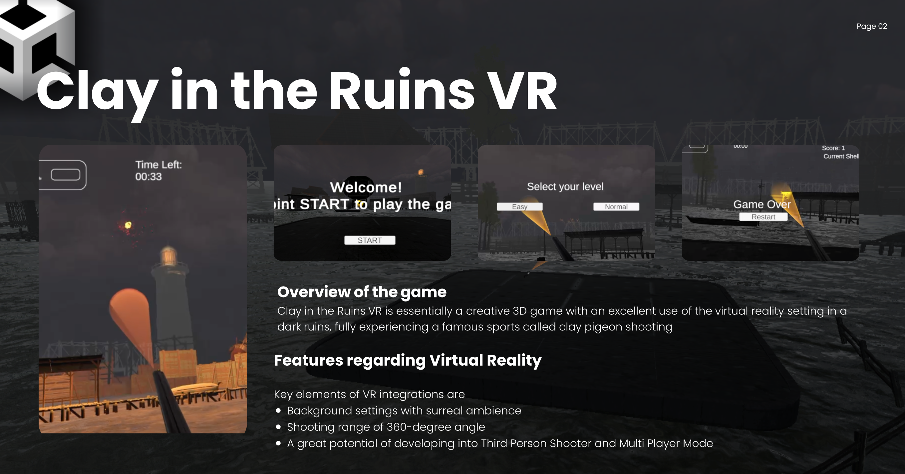
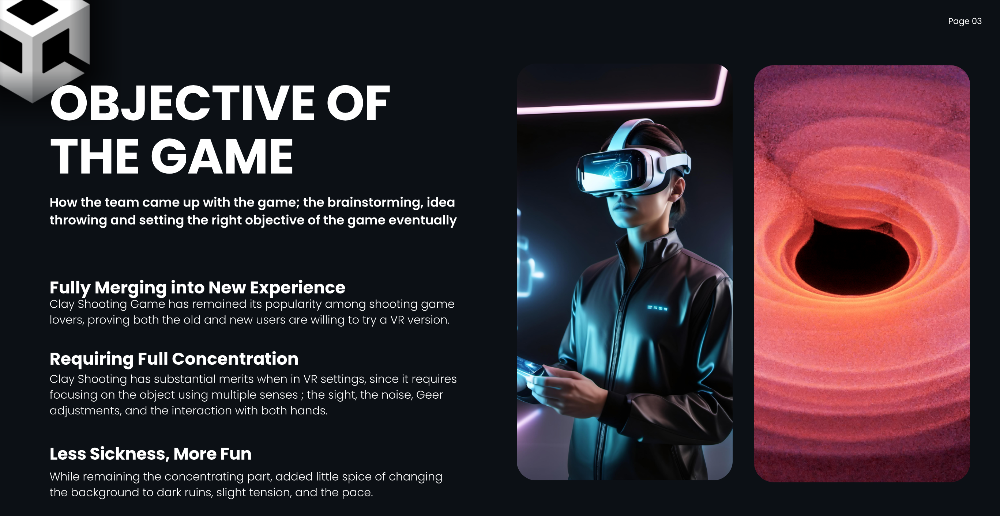
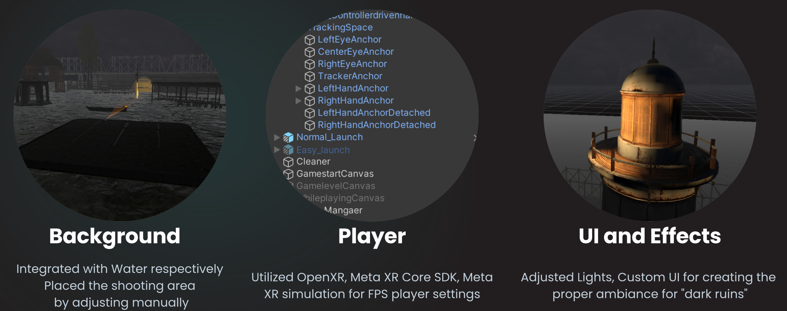
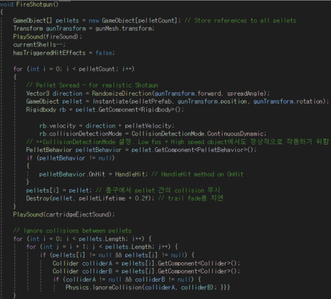
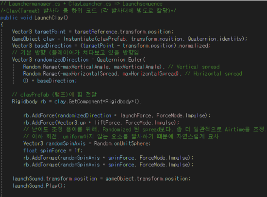
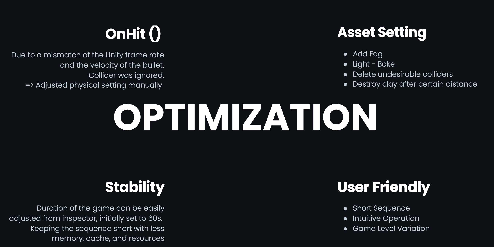

Clay In The Ruins — VR Game Build
Clay In The Ruins is a Unity-based VR clay-shooting game designed for immersion and focus. Set over dark waters with fog and selective lighting, players use VR controllers to load, aim, and shoot clay targets through short play sequences and adjustable difficulty modes. The project emphasizes user-friendly UI, reduced VR sickness, and smooth interaction on Meta Quest–class devices.

Tech Stack: Unity, C#, OpenXR, Meta XR Core SDK, Meta XR Simulator
Code: GitHub Repository
← Back to Home
Responsibilities: gameplay design, controller interaction, UI canvases, effects & audio, C# scripting, optimization, documentation.
-
Motivation & Goals
• Immersion: present a distinct VR mood (dark ruins + water) rather than typical outdoor ranges.

• Focus: visuals, audio, and level pacing tuned for target concentration and flow.
• Comfort: 60-second sessions and limited locomotion to reduce VR sickness while keeping play vibrant. -
Game Components
Background: player platform over water, fog volume, targeted light sources for contrast and guidance.

Player/Device: OpenXR + Meta XR Core SDK + Meta XR Simulator; verified interactions with Meta Quest controllers.
UI & Effects: three world-space canvases (start, difficulty, status/score). Ambient water sound, launch warning, reload/shot SFX, and light cues to aid learnability and immersion. -
Method (Brief)
Environment build → controller mapping & interaction checks → UI flow & difficulty presets → launcher/randomization → timing & scoring → optimization for comfort and stability.
-
Essential C# Scripts
CanvasManager.cs: handles screen transitions (start → difficulty → gameplay) and restart loop.
LevelManager.cs: enables preset launchers (Easy/Normal) with randomized spawn, warning delay, and trajectories.
GameTimer.cs: 60-second countdown; real-time updates for time, ammo, and score on the HUD.
OnHit & Launchers: collision/physics tuning for fast clays; cleanup of off-scene targets to keep perf smooth.  -
Controls
Meta Quest controllers with trigger-based shooting and button-based actions (e.g., reload/confirm). Inputs were validated via Meta XR Simulator during development and on hardware in final checks.
-
Design Notes & Optimization
• Volumetric-like flashlight effect approximated with a cone mesh + spotlight for performance (no true volumetrics).

• Minimal assets, selective colliders, and off-screen auto-despawn reduce CPU/GPU load and bugs.
• Two difficulty modes (Easy, Normal) alter spawn randomness and audio delay cues to shape challenge curves. -
Assessment
Completeness: intuitive UI (3 canvases), simple controls, short rounds (60s), and clear feedback loops.
Creativity & Challenge: distinct setting and interaction flow; physics, hit logic, and “cone light” trick for clarity and performance.
Suitability for VR: 360° audio/visual cues and controlled locomotion make VR usage superior to desktop play. -
Demo
Project Summary (Short)
Unity VR clay-shooting game focused on immersion and comfort. Built with OpenXR and Meta XR SDK, it delivers short, replayable sessions with clean UI, audio cues, and optimized visuals/effects for smooth play on Meta Quest–class headsets.